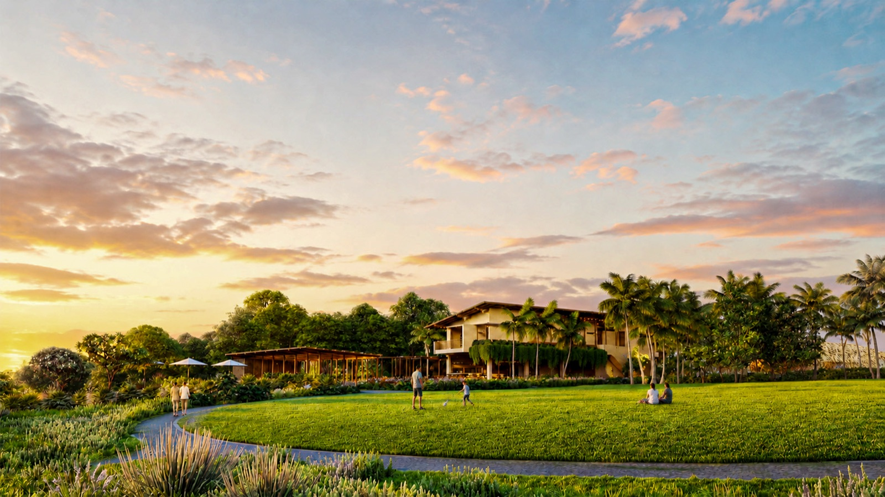
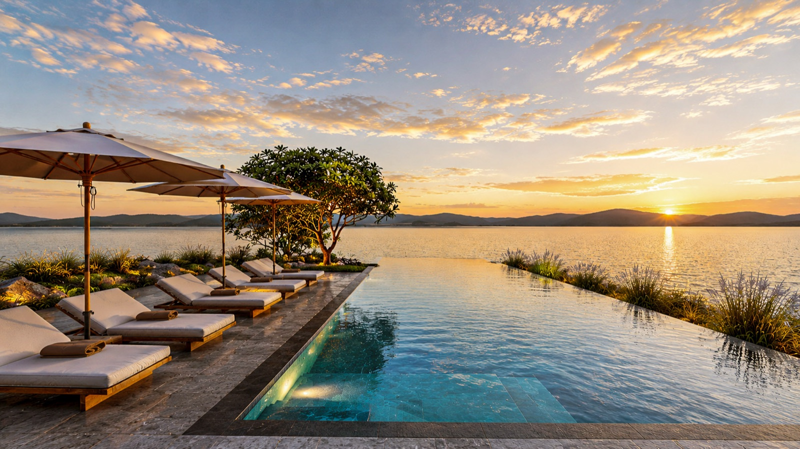

Đặc Quyền Thể Thao Mặt Nước Hồ 100ha:
- Mặt nước tự nhiên 100ha phẳng lặng quanh năm: Nguồn nước sạch trong lành, không sóng lớn, không gió mặn bào mòn, mở ra không gian vận động thể thao an toàn và lý tưởng cho mọi thế hệ.
- Clubhouse & Bến Thuyền Ven Hồ Tiêu Chuẩn 5 Sao: Hệ thống cầu tàu nổi, kho thuyền Kayak/SUP nhập khẩu cao cấp, phòng thay đồ chuẩn resort, lounge cà phê ngắm hoàng hôn và đội cứu hộ an toàn túc trực 24/7.
- Khung Giờ Vàng Bình Minh & Hoàng Hôn: Lướt ván chèo SUP đón những tia nắng sớm đầu ngày giàu ion âm tái sinh, hoặc thong thả ngắm ánh ráng chiều tím hồng nhuộm thắm mặt hồ lúc hoàng hôn.
- Liệu Pháp Blue Mind Chữa Lành Sâu Sắc: Trạng thái thiền động trên mặt nước giúp giảm căng thẳng cortisol, tái tạo năng lượng thể chất và kết nối tình cảm gia đình.

Phối cảnh Clubhouse ven hồ và bến thuyền lúc hoàng hôn — Không gian thể thao mặt nước thơ mộng bên triền hoa và đồng cỏ xanh mướt.
1. Báu Vật Sinh Thái Hồ Tự Nhiên 100ha: Không Gian Vận Động Độc Tôn Ven Đô Sài Gòn
Trong bán kính 60 phút di chuyển từ TP.HCM, việc tìm kiếm một khu nghỉ dưỡng sinh thái sở hữu mặt hồ tự nhiên quy mô lên tới 100ha là điều gần như bất khả thi. Tại Saigon Farm Resort, hồ nước rộng lớn này không chỉ là trái tim điều hòa vi khí hậu giúp nền nhiệt luôn thấp hơn thành phố từ 3 - 5°C, mà còn là một sân vận động thể thao mặt nước ngoài trời khổng lồ.
So với biển khơi thường xuyên chịu tác động của sóng dữ, thủy triều thất thường và độ mặn cao, mặt nước hồ 100ha lại sở hữu ưu thế tuyệt đối: mặt nước êm ái phẳng lặng quanh năm như một tấm gương khổng lồ soi bóng mây trời. Đây là điều kiện hoàn hảo để phát triển các bộ môn thể thao dưới nước không động cơ thân thiện môi trường như Chèo SUP (Stand-Up Paddleboarding), Chèo thuyền Kayak đôi/đơn, Thuyền buồm mini và Đạp vịt nước thể thao.

Ảnh Flycam thực tế: Mặt nước hồ sinh thái 100ha trong xanh ngút tầm mắt, được ôm trọn bởi vành đai cây xanh và vườn cây ăn trái trù phú.
2. Tổ Hợp Clubhouse Ven Hồ & Bến Thuyền Marina Tiêu Chuẩn Quốc Tế
Phân khu bến thuyền được quy hoạch hài hòa bên cạnh Clubhouse trung tâm ven hồ, tạo nên một tổ hợp tiện ích nghỉ dưỡng và thể thao đồng bộ:
1. Cầu Tàu Nổi & Bến Thuyền An Toàn
Hệ thống cầu tàu phao nổi chống trượt tiêu chuẩn quốc tế giúp việc lên xuống thuyền vô cùng dễ dàng và an toàn cho cả người lớn tuổi lẫn trẻ nhỏ. Trang bị đầy đủ khoang chứa thuyền SUP, Kayak cao cấp, phao cứu sinh tự động và ca-nô tuần tra an toàn cứu hộ 24/7.
2. Clubhouse & Sunset Lounge Ven Hồ
Kiến trúc mở panorama 360 độ ôm trọn tầm nhìn ra mặt hồ. Nơi cư dân và du khách sau những giờ chèo thuyền có thể thư thái thưởng thức ly cocktail nhiệt đới, tách cà phê mộc đậm đà hay tham dự tiệc nhẹ hoàng hôn bên boong tàu lộng gió.

Ảnh Flycam thực tế: Góc nhìn bao quát toàn cảnh lòng hồ 100ha với hậu cảnh núi đồi trập trùng, tạo nên địa thế phong thủy 'Sơn Thủy Hữu Tình' hiếm có.
3. Hai Khung Giờ Vàng Đẹp Nhất Trong Ngày Cho Trải Nghiệm Mặt Nước
🌅 1. Bình Minh Tinh Khôi (05:30 – 07:30): Khởi Đầu Ngày Mới Tràn Đầy Sinh Khí
Khi làn sương sớm còn vờn nhẹ trên mặt hồ phẳng lặng, đẩy nhẹ mái chèo SUP lướt đi giữa không gian tĩnh mịch. Từng hơi thở sâu nạp đầy nồng độ ion âm cao gấp 5 lần đô thị, lắng nghe tiếng chim ríu rít trong lùm cây và đón những tia nắng vàng đầu tiên rọi chiếu lên mặt nước. Đó là khoảnh khắc tái tạo năng lượng sống tuyệt vời nhất cho cơ thể.
🌇 2. Hoàng Hôn Lãng Mạn (16:30 – 18:30): Bản Hòa Ca Sắc Màu Rực Rỡ
Mặt trời đỏ ối dần chìm xuống phía sau rặng cây, nhuộm thắm cả bầu trời và mặt nước bằng những dải màu cam, hồng và tím huyền ảo. Cùng người thân hoặc bạn đời chèo thuyền kayak song song, thả trôi mái chèo ngắm nhìn những căn điền trang gỗ và Clubhouse ven hồ dần lên đèn lung linh. Một trải nghiệm thơ mộng ghi dấu sâu đậm trong tâm trí mỗi du khách.

Clubhouse ven hồ — Trái tim tiện ích nơi kết nối các hoạt động thể thao mặt nước, ẩm thực và thư giãn của cộng đồng cư dân điền trang.
4. Liệu Pháp 'Blue Mind': Giá Trị Chữa Lành Thân — Tâm — Trí
Các nghiên cứu khoa học thần kinh hiện đại chỉ ra rằng: việc ở gần hoặc vận động trên mặt nước tự nhiên đưa não bộ con người vào trạng thái 'Blue Mind' — trạng thái thiền định tĩnh lặng nhưng tập trung cao độ, giúp:
- Giải phóng triệt để áp lực: Giảm nồng độ hormone căng thẳng cortisol, kích hoạt giải phóng dopamine và serotonin mang lại cảm xúc phấn chấn, hạnh phúc.
- Rèn luyện thể lực toàn diện: Chèo SUP đòi hỏi sự phối hợp nhịp nhàng của cơ bụng (core), cơ lưng, cơ vai và khả năng giữ thăng bằng của đôi chân, tiêu hao từ 500 - 700 calo/giờ mà không gây áp lực nặng lên các khớp xương như chạy bộ trên mặt đường cứng.
- Gắn kết gia đình & bạn bè: Chèo thuyền kayak đôi là bài tập tuyệt vời để vợ chồng, cha mẹ và con cái cùng phối hợp nhịp nhàng 'đồng tâm hiệp lực', tạo nên những tràng cười sảng khoái và kỷ niệm gắn bó khó quên.
5. Bảng Dịch Vụ & Hoạt Động Thể Thao Mặt Nước Tại Điền Trang
6. Tận Hưởng Cuộc Sống Thượng Lưu Đích Thực Bên Bờ Hồ 100ha
Không cần phải bay sang tận Hồ Como (Ý) hay Hồ Geneva (Thụy Sĩ), ngay tại Saigon Farm Resort, chủ nhân điền trang và du khách lưu trú đã có thể tận hưởng trọn vẹn phong cách sống thể thao mặt nước quý tộc và sang trọng bậc nhất.
Mỗi sớm mai thức dậy là một ngày mới tràn ngập năng lượng cùng mái chèo lướt sóng, mỗi chiều tà là những giây phút thư thái chiêm ngưỡng hoàng hôn rực rỡ bên hiên Clubhouse ven hồ — Đó chính là định nghĩa đích thực về sự xa xỉ của cuộc sống an nhiên giữa thiên nhiên trù phú.
Trải Nghiệm Thực Tế Bến Thuyền & Chèo SUP Tại Saigon Farm Resort
Đăng ký ngay gói trải nghiệm cuối tuần: Chèo SUP/Kayak ngắm bình minh hồ 100ha, thưởng thức tiệc trà chiều tại Clubhouse ven hồ và tham quan các mẫu biệt thự điền trang.
Xem Bản Đề Xuất & Trải Nghiệm Bến Thuyền